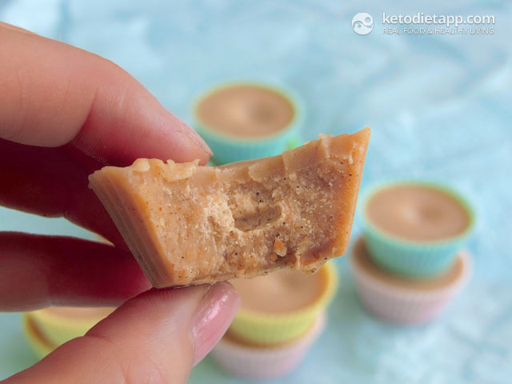

Coconut fat-bombs¶
{kind=link}
Ingredients:¶
1 1/2 cup desiccated, shredded coconut or flaked coconut, unsweetened (112g)
1/4 cup extra virgin coconut oil (55g)
1/4 cup butter, grass-fed or more coconut oil (55g)
1/4 tsp cinnamon or vanilla bean powder
pinch salt (I like pink Himalayan salt)
Optional: 20-25 drops Stevia extract (Clear / Coconut) or other healthy low-carb sweetener - you may not need to add any sweetener.
Note
Flaked coconut works better than shredded - the more fat it has, the better it blends. Also, toasting the coconut will help with blending. When looking for ingredients, try to get them in their most natural form (organic, without unnecessary additives).
Instructions:¶
- Preheat the oven to 175 °C/ 350 °F. Spread the shredded (or flaked) coconut on a baking sheet. Place in the oven and toast for 5-8 minutes until light golden. Mix once or twice to prevent burning.
- Transfer into a blender and pulse until smooth. You will get a smooth and runny consistency.
- Add the softened butter chopped into pieces and softened coconut oil (room temperature).
- Add cinnamon or vanilla, stevia (if used), salt and mix well. Instead of stevia, you can use ~ 2 tablespoons of powdered Erythritol.
- Pour into mini muffin forms or an ice cube tray. You should be able to fill each one with about 1 1/2 tablespoons of the mixture to get 12 servings. Place in the fridge for at least 30 minutes and let it solidify.
- When done, keep refrigerated. Coconut oil and butter get very soft at room temperature. Enjoy!
Nutritional values/serving:¶
| Group | Amount |
|---|---|
| Total carbs | 2.6 g |
| Fiber | 1.9 g |
| Net carbs | 0.74 g |
| Protein | 1.9 g |
| Fat | 9.6 g |
| Saturated | 7.4 g |
| Calories | 104 kcal |
| Magnesium | 6 mg |
| Potassium | 39 mg |
- Macronutrient ratio: Calories from carbs (3.1%), protein (7.9%), fat (89%)